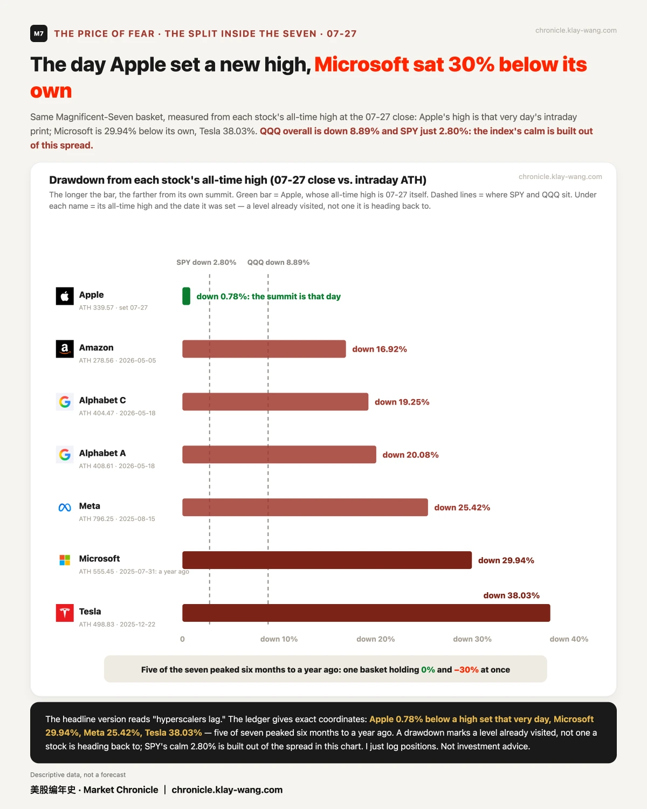
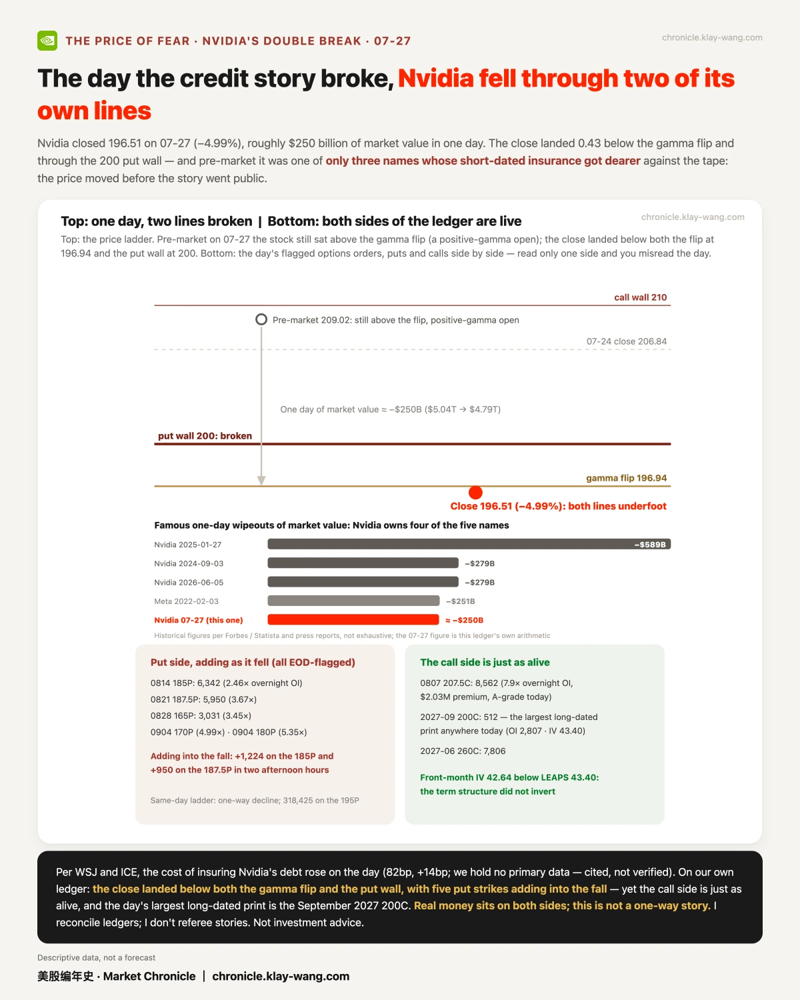
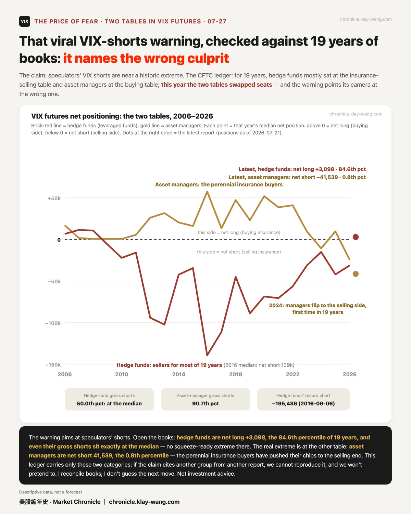
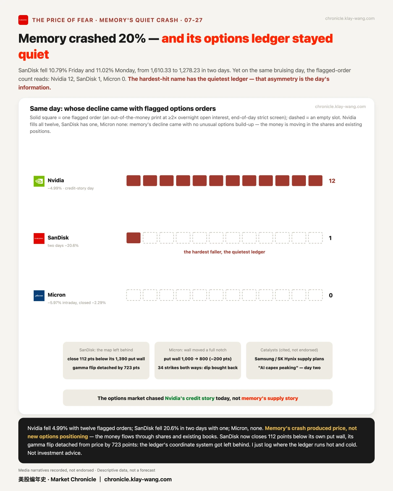
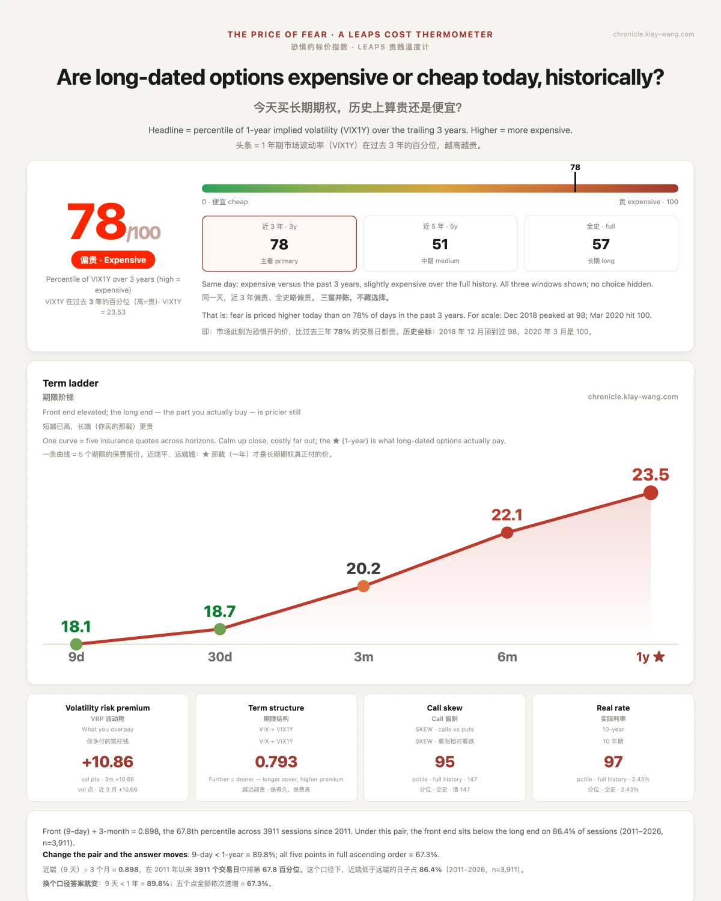

市场今天追的是英伟达的信用故事， 不是存储的供给故事· 07-27 · 7.27-7.31
• 停火跳空被卖了一整天：盘前涨最欢的六只芯片股，收盘五只跌了回去，闪迪从 +4.81% 走到 −11.02%
• 苹果盘中创历史新高，收盘没守住：25.8 万张当日期权押在 337.5 一道坎上，财报周四盘后
• 疯传的 VIX 空头警报，账本说主角认反了：真正踩在 19 年极端上的，是常年买保险的那桌
📋 跳空是消息给的，收盘是钱投的票
一句话：07-27 开盘前的涨幅像烟花，收盘时 17 只全部落在各自当日最高之下。
停火的消息比开盘早到了几个小时，但也早早定完了价。07-27 期指全线高开，半导体排在队伍最前面：闪迪盘前 +4.81%，美光 +3.33%，AMD +3.21%。然后是漫长的兑现：从第一笔成交起，这批涨幅被不紧不慢地卖了六个半小时，闪迪收在 −11.02%，AMD −5.15%，英伟达 −4.99%。盘前涨幅榜的前六名，五只没能把头留在水面上；17 只票全部收在各自日高之下，动作整齐得像听过口令。整齐是这一天最重要的细节：个股的故事解释不了整齐，能解释的只有一件事，停火的价值在盘前那一跳里已经付清，开盘之后，场内再没有出现第二波买家。追着跳空进场的人不是看错了公司，是把消息的价格误当成了行情的起点，这两件事之间，隔着 15 个百分点的账单。
指数则睡了一整天。SPY 收 +0.02%，肚子里同时装着谷歌的 +2.35% 和闪迪的 −11.02%。指数装睡、成分互撕的日子不该再被当成奇观：标普成分股相关性正趴在 20 年账本的 1.1 分位上，2026 年至今已有 76 天落在历史最低的 5% 里。平均数是这轮市场最好的伪装，落差才是它的真面目。

🍎 苹果把历史最高推到 339.57，收盘没能守住
一句话：新高与守住是两件事，而 25.8 万张期权就押在中间那道坎上。
盘中 339.57，收盘 336.91。苹果 07-27 用一个交易日写完了一个关于新高的完整故事：开盘 334.90，几乎正踩在 07-17 的旧高点上；盘中推到 339.57，历史新高；尾盘退回 336.91，距当天的山顶 0.78%。挡在收盘价与新高之间的不是运气，是 25.8 万张当日到期的期权：337.5 这道坎被真金白银画在盘面上，收盘价被按在坎下 0.59 美元。半档位的引力，在当日期权的时代，是机制，不是巧合。
真正冷的账在一格之上。340 那一档是全链最大单档，24.6 万张，收盘归零。本周流传的一篇文章说，340C 只要涨 3.4% 破 335 就能盈利；实际的平衡点是 344.25，比刚创的历史新高还要高出 4.68，股价停在 335 时，那张 call 的内在价值是零。为那句话买单的人交了几百万美元的学费，学的是四则运算；周五收盘开奖，我们回来对这笔账。财报本身在 07-30 周四盘后，短期保险已经站上 52 周的 87 分位：现在才来买保护的人，付的每一分都是财报税。期权给周五定的波动带，上下 12.16 美元。

🪞 同一个七巨头篮子，同时装着 0% 和 −30%
一句话：苹果创新高的同一天，微软距自己的高点回撤三成。
同一天，同一个篮子，两种命运。苹果 07-27 盘中创出历史新高的那一刻，微软距自己的高点回撤 29.94%，那个高点停在整整一年前；特斯拉回撤 38.03%，Meta 25.42%，谷歌 20.08%，亚马逊 16.92%。七台发动机，五台的最高转速停在一年到半年前。而指数几乎看不出来：QQQ 整体回撤 8.89%，SPY 只有 2.80%。拿着指数觉得安稳的人，多半没有拆开看过这只篮子，眼下的体面主要靠苹果和市值权重在撑。
这不是崩坏的证据。回撤是已经走过的位置，不是接下来要回去的位置。但它确实给指数即分散这四个字打了折扣：当成分相关性趴在 20 年的 1.1 分位，指数最平静的日子，恰好是成分互相抵消最猛烈的日子。分散没有消失，它只是恰好长成了对冲的形状。

🦋 有人在九月的账本上，放下了一只 40 万张的蝴蝶
一句话：这不是猜方向的单，是先把几何摆好的网。
09:50:08，同一秒，两笔单子印上九月的账本：SPY 0918 的 625P 成交 10 万张，525P 成交 20 万张；十分钟后，425P 补上 10 万张。三个行权价，等距 100 点，张数 1 : 2 : 1，教科书里的蝶式几何。此后直到收盘，三条腿合计只多了几十张。一笔摆完，不再回头。
成交数据里没有买卖方向，我们不猜。但网的形状自己会说话：三条腿的方向敞口合计不到 0.07，回报只在 9 月 18 日恰好收在 525 那一个点位上达到峰值，约 115 倍，那是蝶式的几何性质，不是任何人的胜算。赌方向的人不会把网张成这个形状；若是买方，净花费约 870 万美元，更像一笔按预算执行的灾难保险。这张单子最值得记住的地方是它的平静：07-27 的 SPY 距历史最高只回撤 2.80%，有人在这样的日子，安安静静给一个低 29% 的世界付了保费。恐慌下不出这种单，预算才下得出。

🧾 信用故事发酵的那天，英伟达跌穿了两道位置
一句话：账本两侧都有真金白银，这不是一边倒的故事。
信用担忧的故事是白天发酵的，但价格头一天就动了。盘前，英伟达是当天 17 只票里仅有的三只短期保险逆势涨价的票之一；据 WSJ 与 ICE 报道，为它的债务买违约保护的价格当天走高。收盘定格在 196.51，跌 4.99%，一天抹掉约 2,500 亿美元市值。把这个数字放进历史坐标：它恰好排在 Meta 2022 年 2 月那次 2,510 亿的旁边，而单日蒸发榜的前五个名字里，四个都是英伟达。同一根 K 线还同时跌穿了两道位置：gamma 翻转点 196.94 与 put 墙 200，五个押跌的价位边跌边加。
最容易被漏掉的是第三条线索：押涨的一侧同样活跃，当天全场最大的长期单是 2027 年 9 月的 200C，近月 IV 42.64 仍低于长端的 43.40，期限结构没有倒挂。三条并起来读，这更像一次事件冲击下的重新定价，不是账本对一家公司的集体离场；我们倾向于这么读，此条记档，错了照规矩认。真正的考验不在今天的 82 个基点，在于这个故事是否持续：账本已经把 8 月的每个星期都铺上了阵地，我们每天回来对。

⚖️ 那条 VIX 空头警报，对完 19 年账本：主角认反了
一句话：警报喊的是投机盘，真正站在极端上的是管家。
一条警报这两天在中文互联网跑得飞快：投机盘的 VIX 空头逼近历史极端，随时可能被挤爆。我们把 CFTC 自 2006 年以来的 1009 期持仓账本全部对了一遍，结论恰好相反：对冲基金当期净多 +3098 张，排 19 年的 84.6 分位，连毛空头都正好卡在中位数上，没有任何快被挤爆的迹象。
真正站在极端上的是另一桌人。资产管理人净空 41539 张，19 年的 0.8 分位。过去 19 年，对冲基金几乎一直坐在卖保险那桌，大资金管家一直坐在买保险那桌；2024 年起两桌人互换了座位，管家头一次把筹码押到了卖方的尽头。这条警报能一夜传开，不是因为它对，是因为它短：把 19 年的角色互换压缩成五个字的恐吓，传播效率确实高。吓人的话跑得快，对账的话跑得慢，我们做的是慢的那一半。丑话照例说在前面：这本账只有两个口径，若原说法引的是别家报告的另一个群体，我们复现不了，也不假装复现。

🔇 存储崩了两成，期权账本却安安静静
一句话：跌得最狠的地方反而最安静，这个不对称就是当天的信息。
闪迪用两天跌掉 20.6%：周五 −10.79%，周一 −11.02%，收盘价比自己的 put 墙还低 112 点。按剧本，这样的日子期权账本该挤满逃生和抢反弹的单子。实际的计数是：英伟达 12 条被标记的异常单，闪迪 1 条，美光 0 条。期权市场这一天追的是英伟达的信用故事，没有人追存储的供给故事。
这份冷淡本身就是当天最锋利的读数。严出口径下，闪迪一整天只有 1 条新赌注；墙位与翻转点被甩在身后 112 点和 723 点，连做市商的坐标都没来得及跟上价格。价格在跑，仓位没动：更像正股在补一笔估值的账，专业资金拒绝把它升级成结构性事件。跌得最狠的地方反而最安静，安静有时比恐慌更有信息量；这一条同样记档，回头来对。

📎 顺手记一笔：深度实值期权当正股用，一天四个标的
一句话：同一门手艺，07-27 在四个标的上同时出现，多空两向都有。
流传的那篇文章讲苹果 280 美元看涨期权当正股买（涨跌几乎一比一跟）。同一天我们的扫描里：亚马逊两笔深度实值看跌合计近 700 万美元权利金，其中 287.5 那笔此前无人持仓、全新建仓，正好盖住周四财报；微软当天到期的 405 看跌贴着平价成交 627 万美元。一个替多头省钱，一个替空头省钱，全在财报周。方向依旧无数据可判，只记结构。
🌡 温度计：78 / 100
是什么：我有个恐惧温度计，量的就是市场现在花多少钱，给未来一年买保险。保险越贵，说明市场越怕。
07-28 读数：78（满分 100），意思是这份保险贵到了过去三年的前 22%。
关你啥事：停火消息一来，眼前的怕在退价：17 只票里 13 只的短期保险 07-27 降了价；可给明年买保险的价钱几乎没让。短期的慌散得快，长期的怕还站在原地。

本站不提供投资建议，不预测方向，不做择时。